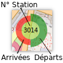

DescriptionLes donnéesLes données présentées dans cette page proviennent d'un service de partage de vélos de la ville de Los Angeles. Elles sont constitués des enregistrement d'un peu plus de 132 000 voyages effectués sur une période de 269 jours, entre juillet 2016 et avril 2017. Pour chaque voyage sont connus ses stations de départ et d'arrivée, la position géographique de ces stations, les heures des départ et d'arrivée, le type d'abonnement utilisé. Pour réaliser les graphiques nous avons pré-filtré ces données a l'aide de scripts Python pour constituer des fichiers .csv de taille plus petite pour faciliter leur exploitation. Fichier .csvLa visualisationCette visualisation présente sous forme de graphique en barre le nombre moyen de voyages débutés durant chaque demi-heure au cours de la journée sur l'ensemble du réseau. Les heures, variables quantitative d'intervalle, sont représentés en position sur l'abscisse. Le nombre de voyages qui est une variable quantitative de rapport, est lui visualisé par la taille de la hauteur d'un rectangle. Les valeurs numériques peuvent être lues dans un tooltip s'affichant lorsque l'on pointe une barre du graphique Les données peuvent être affichées pour les jours de semaine (lundi-vendredi) ou de weekend ( samedi, dimanche). En passant d'un mode à l'autre on peut observer:
|
DescriptionLes donnéesLes données présentées dans cette page proviennent d'un service de partage de vélos de la ville de Los Angeles. Elles sont constitués des enregistrement d'un peu plus de 132 000 voyages effectués sur une période de 269 jours, entre juillet 2016 et avril 2017. Pour chaque voyage sont connus ses stations de départ et d'arrivée, la position géographique de ces stations, les heures des départ et d'arrivée, le type d'abonnement utilisé. Pour réaliser les graphiques nous avons pré-filtré ces données a l'aide de scripts Python pour constituer des fichiers .csv de taille plus petite pour faciliter leur exploitation. Fichiers .csv utilisés pour ce graphique: semaine - weekend La visualisationCette visualisation présente sur une carte le nombre total de départs et d'arrivées à chaque station, groupés par demi-heure au cours de la journée. Un slider permet de changer la tranche d'heure a visualiser. Les départs de la station sont représentés par un demi-cercle vert, les arrivées par un demi-cercle rouge. La taille de ces demi-cercles est proportionnelle aux nombre de voyages.
Les valeurs numériques peuvent être lues dans un tooltip s'affichant lorsque l'on pointe une station sur la carte. Les données peuvent être affichées pour les jours de semaine (lundi-vendredi) ou de weekend ( samedi, dimanche). Ce type de visualisation pourrait permettre à l'opérateur du réseau d'optimiser le placements des vélos dans les stations au cours de la journée. De déplacer les vélos depuis des stations recevant beaucoup d'arrivées vers des stations où un grand nombre de départs est anticipé. Par exemple, le weekend à 8h30, un grand nombre de départs sont enregistrés depuis les stations 3014 et 3042 (en haut à droite de la carte). Besoin de nombreux vélos disponibles. Inversement à 17h30, beaucoup de retour de vélos ont lieu dans ces mêmes stations. Besoin d'avoir des places libres pour garer les vélos. (Ces deux stations ont l'air de correspondre à des stations de métro) |